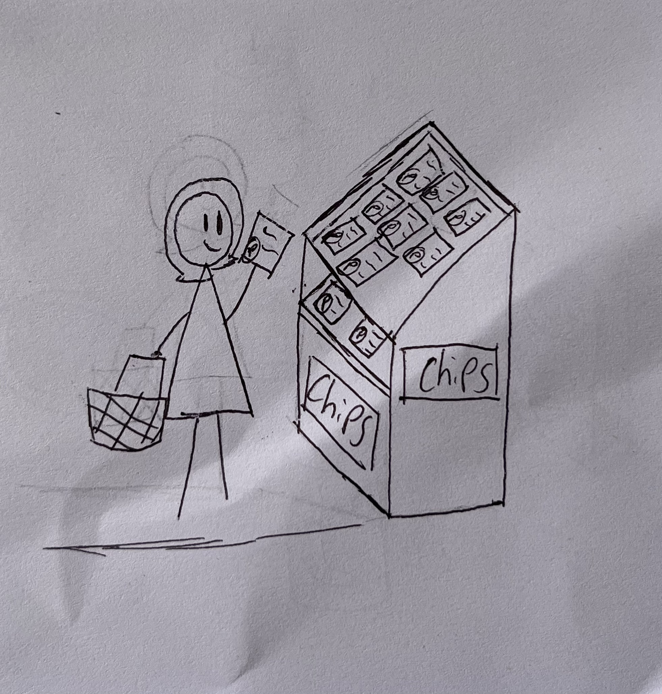
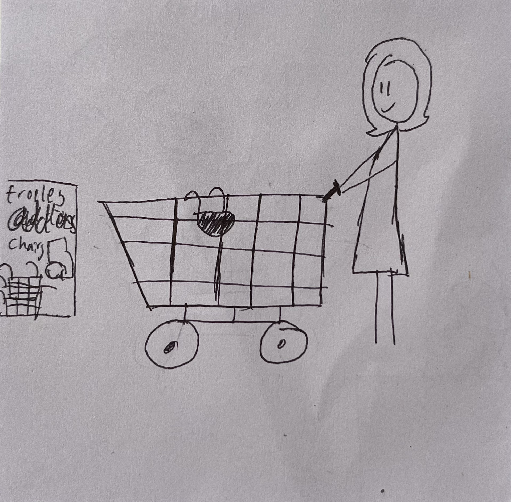
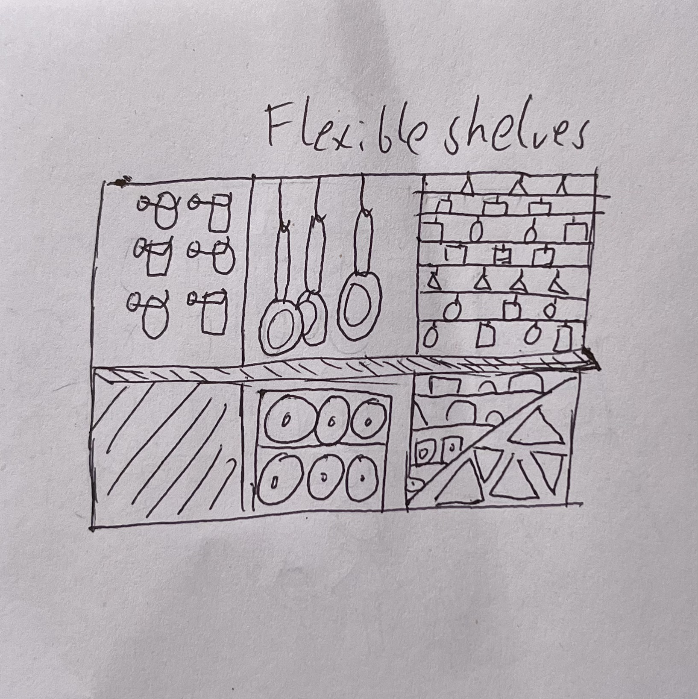

<!DOCTYPE html>
<html lang="en">

</html>
<head>
    <meta charset="UTF-8" name="viewport" content="width=device-width, initial-scale=1.0">
    <link rel="stylesheet" href="styles.css">
    <link rel="icon" type="image/png" href="picon2.png">
    <title>Assessment 3</title>
</head>


<body>
    <br>
   <h1>©Plastasteel's Satisfied Customers and Questions Page</h1>
<br>
       <nav class="navbar">
            <ul>
                <li><a href="index.html">Welcome</a></li>
                <li><a href="beginning.html">Beginning</a></li>
                <li><a href="conflict.html">Conflict</a></li>
                <li><a href="ending.html">Ending</a></li>

            </ul>
       </nav>
<br>
<br>
<br>
<br>
<br>
<br>

    <h2>Introduction</h2>

        <div id="about">
            <br>
            <p>Now that you understand the basics of our product, let us introduce our valued customer, Olivia! (click the image to make her wave!)</p>
            <br>
                    
                    <script>
                        function changeImage(){
                            let displayImage = document.getElementById ('olivia')
                            if (displayImage.src.match('IMG_2202.jpeg')){
                                displayImage.src = 'IMG_2203.jpeg'
                            } else {
                                    displayImage.src = 'IMG_2202.jpeg'
                                }
                        }
                    </script>
                    <br>
            <p>She is one of our customers who adopted the fabricator and ©Plastasteel products early as a trial run, and has since been a loyal returning customer!</p>
            <p>In an interview shes has told us that she primarily uses the ©Plastasteel fabricator for quick repairs around the house, making bags and covers to preserve food, and even gone to our fabricator stores to print out furniture at cheaper costs!</p>
            <br>
            <div id="oliviaspeak">
                <p><i>"These fabricators have really helped em out around the house and at work. Instead of using a lot of money on baking paper or those small plastic bags to keep food, I just use the fabricator to print out what I need, then recycle it back into the machine when I'm done using it. Its surprisingly easy and really has helped change my and the kid's lives!" - Olivia</i></p>
            </div>
         
            <br>
            
        </div>
<br>
<br>

<h2>Our Impact</h2>

<div id="impact">
    <br>
        <p>As a result of our good work and growing customer base, we've had the chance to help many buissnesses with our product. </p>
        <p>As part of this interview we followed Olivia along to one of her shopping trips to examine how we've been making changes to the world with ©Plastasteel. </p>
        <p>As she enters we already see some of the ways ©Plastasteel has improved the lives of supermarkets and their shoppers!</p>
    <br>
</div>


<div class="row">
  <div class="column">
    

    <div class="content">
        <h1>Shop suppliers have adopted using Plastasteel Plastic Packaging</h1>
    </div>


  </div>
  <div class="column">
    

            <h1>Typical shopping trolleys have been recycled to become more accesible</h1>
  </div>


  <div class="column">
    

            <h1>Shelving has been transfromed to have more dynamic shelving options that better suit products</h1>

  </div>
</div>


<br>
<br>
<br>


</body>
</html>